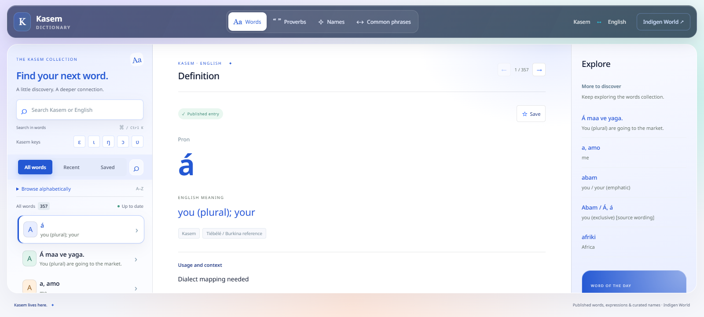
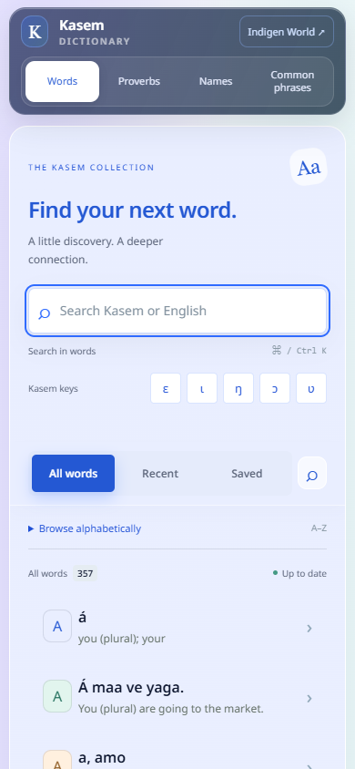

A scrolling fix is live for the Kasem Dictionary at venacula.com. It addresses the page jumping when you scroll back up through an entry or a list.
The fix was deployed on October 4, 2026, and the public release files have been verified. The screenshots below show the checked local preview.
The navigation can still slide out of view while you scroll down and return when you scroll up. The dictionary panels now keep the same size and position during that change. Reaching the edge of a panel also keeps scrolling inside that panel instead of moving the surrounding page.
This helps readers move between search results, meanings and nearby entries without the page bouncing. Words, Proverbs, Names and Common phrases retain their existing collection controls.

On phones, closing an entry returns focus to the result you opened without forcing the results list back to the search box. The search shortcut and Back to search button remain available when you want to start another lookup.

Open or refresh venacula.com and browse as usual. There is no app installation or setting to change. This fix changes scrolling behavior; entries still depend on their existing publication and review requirements.